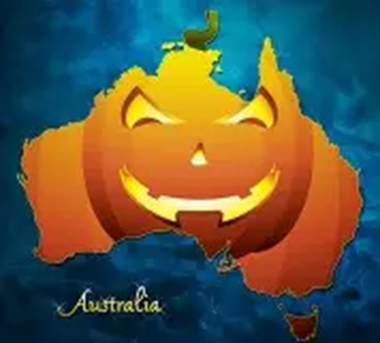

Halloween in Australia has grown quite a bit over the past two decades — while it wasn’t traditionally celebrated like in the U.S. or Europe, it’s now a popular event in many communities. 🎃 Here are some spooky and Halloween-related traditions that Australians have embraced (plus a few unique local twists): 🇦🇺 Modern Australian Halloween Traditions
🕸️ Australian Twists
In the coastal town of Currumburra, Halloween crept in on a warm, uneasy spring wind, carrying the scent of salt and something older. The jacarandas bloomed purple, but their petals looked almost like drops of dried blood in the moonlight. Ellie and her best friend Mason darted from house to house, trick-or-treating beneath flickering porch lights, their footsteps echoing strangely on the quiet street. Behind them, decorations swayed in the wind — cobwebs tore, skeletons rattled, and one plastic ghost seemed to move on its own. They laughed nervously, pretending not to notice the strange shapes shifting in the shadows. Some kids dressed as surf vampires and zombie lifeguards, but one tall figure in the distance didn’t look like anyone in costume. When Ellie turned to point it out, it was gone. Later, they joined the lighthouse ghost tour, where the guide’s lantern barely pierced the darkness, and whispers seemed to slither through the air. The guide spoke of the Min Min lights and lost sailors whose spirits wandered the dunes — and just as he did, a pale glow shimmered outside the cracked window. A low growl rolled through the corridor, deeper than any human throat could make. The group froze, hearts hammering, as a hulking shape emerged from the dark, eyes glinting red. It wasn’t part of the show — even the guide stumbled back. Screams filled the lighthouse until the creature vanished into the night like smoke. Back in town, the laughter felt thinner, forced, as people tried to forget. On the beach, Hocus Pocus flickered on the big screen, but Ellie couldn’t relax. Out beyond the crowd, by the dunes, something watched — a tall, shaggy figure with glowing eyes — waiting for next Halloween to come around again.
